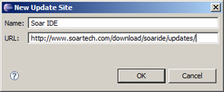

Install Eclipse
- Since the Soar IDE is built as a plug-in to Eclipse, you need to download Eclipse (version 3.2 or greater) and install it.
- Help installing Eclipse can be found here.
Java
- The plugin requires the Java Runtime Environment (JRE) 5.0 or greater, if you do not have it installed, you can get it here.
Install the Soar IDE Eclipse Plugin
Once Eclipse is installed, you need to download the Soar IDE plug-in.
- From the Help menu in Eclipse, select Install New Software... to open the Install dialog. 
- Now add a new remote site to download the Soar IDE plug-in:
- Click the Add... button to open the Add Repository dialog.
- Type Soar IDE into the Name text field in the dialog.
- Type http://soaride.googlecode.com/svn/update in the URL text field and click OK.
- A new site should now be displayed in the Install dialog. Make sure the box next to the Soar IDE site is checked, and click Finish to move on.
- The Updates dialog should now be displayed. Check the box next to the Soar IDE feature, and click Finish.
- Accept the license agreement on the this screen, and click Next.
- Now click Finish to begin installing the plug-in.
- You will be asked to verify the plug-in that is being installed. Click Install All to proceed.
Eclipse should now ask you to restart in order to complete the installation.